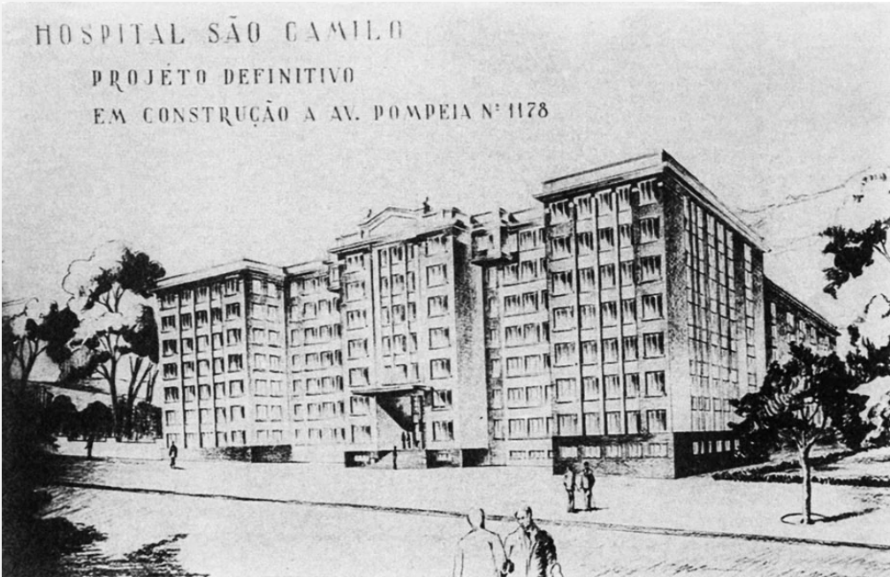

Nossa História
Em 1922, os religiosos camilianos chegaram ao Brasil e se instalaram no então bairro paulistano de Vila Pompeia. Liderados pelo padre Inocente Radrizzani, tinham como principal propósito construir no país uma obra que remetesse, com fidelidade, aos princípios estabelecidos pelo fundador daquela ordem religiosa, São Camilo de Lellis (1550-1614), sintetizados no respeito e valorização da vida e saúde.
O documento Estatuto da Sociedade Beneficente São Camilo orienta todas as ações da Instituição. Isso significa que os conceitos de acolhimento, humanização do atendimento médico-hospitalar e universalidade da atenção à saúde, atualmente tão valorizados e desejados, fazem parte dos nossos pilares e norteiam as ações desde os primórdios.
Com base nesses princípios, logo após a chegada ao bairro da Pompeia, o padre Inocente Radrizzani implantou o Consultório Médico São Camilo, um pequeno centro de assistência à população carente do bairro, onde o atendimento era feito por médicos voluntários.
Um grupo de mulheres da comunidade, conhecido como as Damas de São Camilo, se empenhava na busca de donativos para a manutenção dessa obra. Com o apoio delas, em pouco tempo formaram uma extensa rede de doadores, possibilitando sonhar ainda mais longe e, em 1935, inauguraram a Policlínica São Camilo, localizada na Avenida Pompeia.
A Policlínica se tornaria o Hospital São Camilo Pompeia, inaugurado em 23 de janeiro de 1960, o primeiro dos camilianos no Brasil e hoje referência em atendimento de qualidade em São Paulo. Uma das características que possibilitou alcançar essa posição foi a competência de seus dirigentes, em conciliar a preservação dos valores humanos e caridosos, que fundamentaram a sua implantação com a permanente incorporação dos avanços científicos e tecnológicos.
Para exemplificar a capacidade de acompanhar o progresso em benefício da saúde, em maio de 2007, quando o ensino a distância ainda experimentava seus primeiros movimentos, uma cirurgia realizada no Centro Cirúrgico do Hospital São Camilo foi transmitida ao vivo, durante o 16º Congresso Internacional de Cirurgia Endoscópica, que acontecia no México.
Projetado em 1956 para ser o hospital do Ministério da Aeronáutica e inaugurado oficialmente em 3 de março de 1979, o Hospital São Camilo Santana foi vendido à Prefeitura de São Paulo em 1974 e, três anos depois, transferido em comodato para a Sociedade Beneficente São Camilo, que o adquiriu em agosto de 2015.
Já o Hospital São Camilo Ipiranga foi inaugurado como Hospital Leão XIII em janeiro de 1948 pelo Círculo Social do Ipiranga e quando religiosos camilianos assumiram a entidade, em 19 de fevereiro de 2000, o hospital passou a integrar a Rede de São Paulo.
Atualmente, as três Unidades da Rede possuem mais de 750 leitos, cerca de 6 mil colaboradores assistenciais, administrativos e aproximadamente 7.900 médicos cadastrados. Os recursos provenientes permitem subsidiar os 33 hospitais administrados pela Sociedade Beneficente São Camilo distribuídos pelo país que oferecem atendimento público.
A Sociedade Beneficente São Camilo inaugurou o Recanto São Camilo, que prestava assistência em saúde e residência para idosos em 1972. O Hospital de Transição foi implementado em 2002, trazendo a experiência em mais de 50 anos de administração hospitalar São Camilo. Em 2018, a Rede de Hospitais São Camilo de São Paulo assumiu a administração, transformando-o na quarta Unidade da Rede, que agora é denominada Reabilitação e Cuidados Paliativos São Camilo.